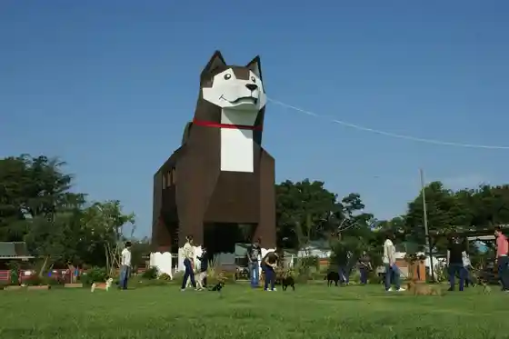
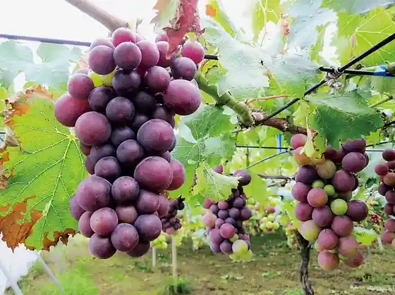
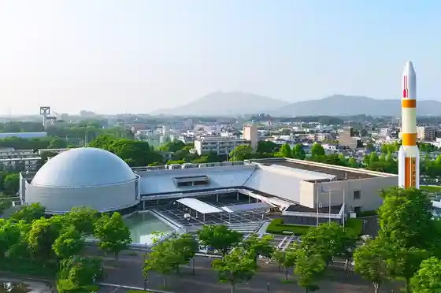
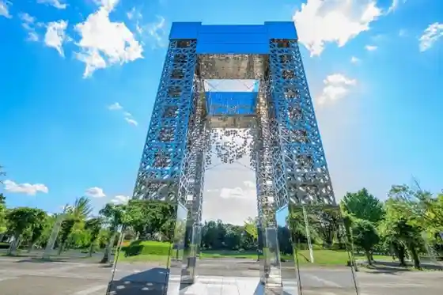

Tsukuba Wanwan Land
Tsukuba, Ibaraki · 029-866-1001 · Official / source link

Tsukubasan
Tsukuba, Ibaraki · 029-869-8333 · Official / source link
Seo Orchard
Tsukuba, Ibaraki · 029-866-2084 · Official / source link

Tsukuba Ekisupo Center
Tsukuba, Ibaraki · 029-858-1100 · Official / source link

Kagaku Banpaku Memorial Park
Tsukuba, Ibaraki · 029-856-1005 · Official / source link

Uchu Koku Kenkyukaihatsukiko (JAXA) Tsukuba Uchu Center
Tsukuba, Ibaraki · 029-868-2023 · Official / source link
Numata Ya Main Shop
Tsukuba, Ibaraki · 029-866-0036 · Official / source link
Tsukubasan Shrine
Tsukuba, Ibaraki · 029-866-0502 · Official / source link
Hirasawa Kanga Iseki
Tsukuba, Ibaraki · 029-867-5841 · Official / source link
Tsukubasan Onsen Tsukuba Baths (Tsukubasan)
Tsukuba, Ibaraki · 029-866-2983 · Official / source link
Jinchu Gama no Abura Uri
Tsukuba, Ibaraki · 029-874-8097 · Official / source link
Tsukuba Onsen Kiraku Sato Bettei
Tsukuba, Ibaraki · 029-846-2641 · Official / source link
Fukuda Farm
Tsukuba, Ibaraki · 029-861-7465 · Official / source link
Tsukuba Botan Sono
Tsukuba, Ibaraki · 029-876-3660 · Official / source link
Maruso Farm
Tsukuba, Ibaraki · 029-837-0629 · Official / source link
National Kagaku Museum Tsukuba Jikken Botanical Garden (Tsukuba Botanical Garden)
Tsukuba, Ibaraki · 029-851-5159 · Official / source link
Bekariipeniirein (BAKERY PENNY LANE) Tsukuba Mise
Tsukuba, Ibaraki · 029-896-6165 · Official / source link
Ki Village Budo Sono
Tsukuba, Ibaraki · 029-876-0688 · Official / source link
Chishitsu Hyohon Kan
Tsukuba, Ibaraki · 029-861-3750 · Official / source link
Tsukamoto Rien
Tsukuba, Ibaraki · 029-865-0855 · Official / source link
Tsukubasan Hitachi Ushi Ryori Hitachi no
Tsukuba, Ibaraki · 029-866-1221 · Official / source link
Tsukubasan Edoya
Tsukuba, Ibaraki · 029-866-0321 · Official / source link
Hojo Oike
Tsukuba, Ibaraki · 029-883-1111 · Official / source link
Iida Budo Sono
Tsukuba, Ibaraki · 029-873-3938 · Official / source link
Ruraru Kise
Tsukuba, Ibaraki · 029-857-3355 · Official / source link
Kappo Ichi no Ya
Tsukuba, Ibaraki · 029-864-2310 · Official / source link
Tsukuba Kankotetsudo
Tsukuba, Ibaraki · 029-866-0611 · Official / source link
Ogawa Buruberii Sono
Tsukuba, Ibaraki · 029-836-1312 · Official / source link
Tsukuba Wainarii
Tsukuba, Ibaraki · 029-893-5115,090-3908-5115 · Official / source link
Tsukuba Hamu Resutoran Nature Aji Workshop
Tsukuba, Ibaraki · 029-850-4186 · Official / source link
Foresutoadobencha Tsukuba
Tsukuba, Ibaraki · Official / source link
Kokudochiriin Chizu to Sokuryo no Science Museum
Tsukuba, Ibaraki · 029-864-1872 · Official / source link
Uetake Orchard
Tsukuba, Ibaraki · 029-864-2027 · Official / source link
Tsukuba Sansui Tei
Tsukuba, Ibaraki · 029-855-8181 · Official / source link
Tsutsujiga Oka Resutohausu
Tsukuba, Ibaraki · 029-866-0918 · Official / source link
Tsukuba Bahha no Mori Bunkazai Dan
Tsukuba, Ibaraki · 029-847-8696 · Official / source link
CYBERDYNE STUDIO (Saibadainsutajio)
Tsukuba, Ibaraki · 029-828-8282 · Official / source link
TSUKUBA BREWERY
Tsukuba, Ibaraki · 029-846-7252 · Official / source link
Norin Sakura Tori (Tsukuba Norin Kenkyu Danchi)
Tsukuba, Ibaraki · 029-869-8333 · Official / source link
Ibaraki Jizake Ba Tsukuba
Tsukuba, Ibaraki · Official / source link
Tsukuba Fureai Village
Tsukuba, Ibaraki · 029-866-1519 · Official / source link
Viewpoint no O Zashiki Tsukubasan Kanda Ya
Tsukuba, Ibaraki · 029-866-0044 · Official / source link
Ibarakiken Tsukuba Art Museum
Tsukuba, Ibaraki · 029-856-3711 · Official / source link
Igata Rien
Tsukuba, Ibaraki · 029-864-0756 · Official / source link
JA Tsukuba Yatabe Nosambutsu Chokubai Tokoro
Tsukuba, Ibaraki · 029-836-4101 · Official / source link
Tsutsujiga Oka Park
Tsukuba, Ibaraki · 029-869-8333 · Official / source link
Tsukuba Saiensu Tour Ofisu
Tsukuba, Ibaraki · 029-863-6868 · Official / source link
Toyosato Yukari Forest
Tsukuba, Ibaraki · 029-847-5061 · Official / source link
AIST-Cube (Aisutokyubu)
Tsukuba, Ibaraki · Official / source link
Aida Budo Sono
Tsukuba, Ibaraki · 029-847-2689 · Official / source link
Tsukuba Deiriiin
Tsukuba, Ibaraki · 029-851-0003 · Official / source link
Izumiko Iku Kannon Yoshi Ryu Tera (Shidarezakura)
Tsukuba, Ibaraki · 029-867-0323 · Official / source link
Tsukuba Buruberii Sono
Tsukuba, Ibaraki · 029-869-0526 · Official / source link
Hi Ke Farm (Kyu Tamago no Mori Buruberii Sono)
Tsukuba, Ibaraki · 090‐2672‐4663 · Official / source link
no Bahoru
Tsukuba, Ibaraki · 029-852-5881 · Official / source link
Koma Lookout Mise
Tsukuba, Ibaraki · 029-866-1574 · Official / source link
Resuto Center Tsukuba Kan Main Shop
Tsukuba, Ibaraki · 029-866-0019 · Official / source link
JA Tsukuba Kukizaki Nosambutsu Chokubai Tokoro
Tsukuba, Ibaraki · 029-874-6306 · Official / source link
Tsukubasan Autodoakukkingu Experience
Tsukuba, Ibaraki · 029-869-8333 · Official / source link
JA Tsukuba Tsukuba Nosambutsu Chokubai Tokoro
Tsukuba, Ibaraki · 029-867-3310 · Official / source link
Ta Village Chokubai Tokoro
Tsukuba, Ibaraki · 029-851-2545,070-4427-4664 · Official / source link
Mutsumi Farm
Tsukuba, Ibaraki · 090-9248-0377 · Official / source link
Roku Tokoro Great Buddha
Tsukuba, Ibaraki · Official / source link
Inaba Shuzo
Tsukuba, Ibaraki · 029-866-0020 · Official / source link
Tsukamoto Orchard
Tsukuba, Ibaraki · 029-865-0856 · Official / source link
Hisamatsu Buruberii Sono
Tsukuba, Ibaraki · 029-857-2472 · Official / source link
Ruraru Kise Berii no Oka
Tsukuba, Ibaraki · 029-857-3355 · Official / source link
Manmakafe / Ibarakiken San Doraifurutsu Jamu no Senmonten
Tsukuba, Ibaraki · 080-4891-0298 · Official / source link
Tsukuba Buruberii Village Numazaki
Tsukuba, Ibaraki · 029-847-1766 · Official / source link
Buruberii Kubota
Tsukuba, Ibaraki · 029-836-1727 · Official / source link
Ishi Ban Soba to Sumi Kushiyaki Kazunari Tsukuba Mise
Tsukuba, Ibaraki · 029-855-9990 · Official / source link
Ichigo Ie
Tsukuba, Ibaraki · 029-875-9145 · Official / source link
Aonisai Farm Buruberii Tourist Farm & Kafe
Tsukuba, Ibaraki · 029-811-6275 · Official / source link
Nishi Tsukuba Buruberii YOU Tomo Suiito Farm
Tsukuba, Ibaraki · 090-3342-4600 · Official / source link
Miyamoto Buruberii Sono
Tsukuba, Ibaraki · 029-847-6523 · Official / source link
Ra Feriiche Anekkusu
Tsukuba, Ibaraki · 029-875-5070 · Official / source link
Twin Peaks Mountain Brewing Kurafuto Bia Jozo Resutoran
Tsukuba, Ibaraki · 029-828-8577 · Official / source link
Buruberii Farm UTSUNO
Tsukuba, Ibaraki · 029-865-0730 · Official / source link
Ichigo Ie Tsukuba Ne Farm
Tsukuba, Ibaraki · 029-869-0069 · Official / source link
Tsukuba Vineyard (Tsukuba San Budo 100% no Wain)
Tsukuba, Ibaraki · 090-2429-5319 · Official / source link
Tsukuba Buruberii Yu Farm
Tsukuba, Ibaraki · 080-5099-0099 · Official / source link
Tsukuba Buruberii Pikunikku
Tsukuba, Ibaraki · 029-811-6677,080-5041-4268 · Official / source link
JA Tsukuba Sakura Nosambutsu Chokubai Tokoro
Tsukuba, Ibaraki · 029-857-8290 · Official / source link
Toritate Yasai Kachan
Tsukuba, Ibaraki · 029-847-1565 · Official / source link
Soba Ogawa
Tsukuba, Ibaraki · 090-3007-9161 · Official / source link
Kafeposuten
Tsukuba, Ibaraki · 029-867-5565 · Official / source link
Tsuchida Farm
Tsukuba, Ibaraki · 029-864-0583 · Official / source link
Yakiniku Resutoran Sara Mine
Tsukuba, Ibaraki · 029-852-2989 · Official / source link
Kobayashi Buruberii Sono
Tsukuba, Ibaraki · 029-847-4636 · Official / source link
Yamada Budo Sono
Tsukuba, Ibaraki · 029-847-7714 · Official / source link
NAMICHIDORI Sabo
Tsukuba, Ibaraki · 029-851-9361 · Official / source link
Kawarakeya
Tsukuba, Ibaraki · 070-6454-1583 · Official / source link
Kyu Kobayashi Tei Hitotoki
Tsukuba, Ibaraki · 029-866-0003 · Official / source link
Yo Buruberii Sono
Tsukuba, Ibaraki · 029-864-0271 · Official / source link
Buruberiisaito
Tsukuba, Ibaraki · 029-847-6903 · Official / source link
Ichinenju Oden Ya Hora Mine Hanabi
Tsukuba, Ibaraki · 029-855-8080 · Official / source link
Kaisen Ya Tatsu Umi
Tsukuba, Ibaraki · 029-838-5666 · Official / source link
Iizuka Sono
Tsukuba, Ibaraki · 029-857-4955 · Official / source link
Aiberii Farm
Tsukuba, Ibaraki · 029-847-4596 · Official / source link
Mikan Sono Tomii
Tsukuba, Ibaraki · 090-4528-3212 · Official / source link
Ru Taburie
Tsukuba, Ibaraki · 029-857-8110 · Official / source link
Yanaka no Mori
Tsukuba, Ibaraki · 090-6303-4531 · Official / source link
Hojo Fureai Kan (Kyu Ta Village Gofuku Mise)
Tsukuba, Ibaraki · 080-6788-0693 · Official / source link
Urasato Shuzo Mise
Tsukuba, Ibaraki · 029-865-0032 · Official / source link
Ichinenju Oden Ya Hanabi
Tsukuba, Ibaraki · 029-851-2214 · Official / source link
Tai Museum
Tsukuba, Ibaraki · Official / source link
Sakasai Rien
Tsukuba, Ibaraki · 029-876-1557 · Official / source link
Ono Village Farm
Tsukuba, Ibaraki · 029-847-1565 · Official / source link